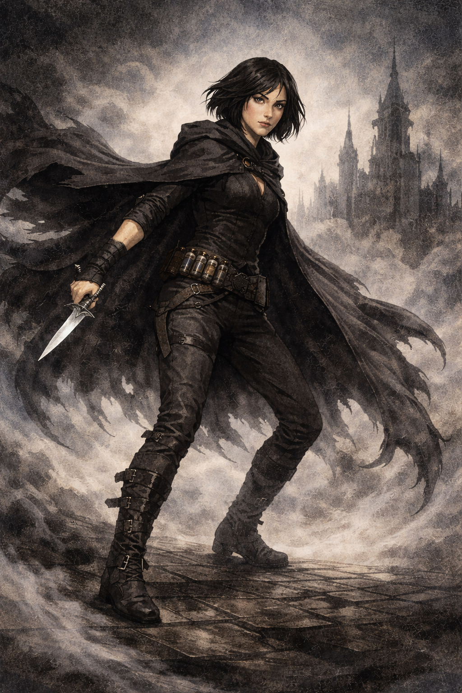
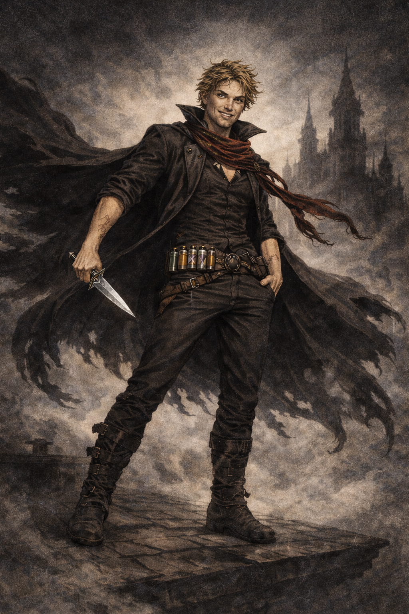
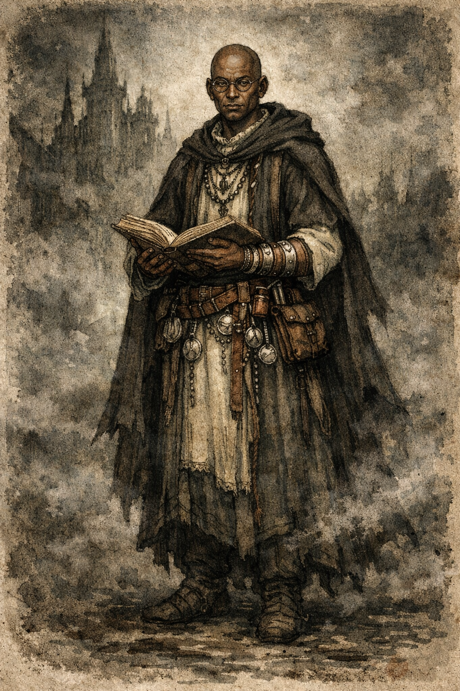
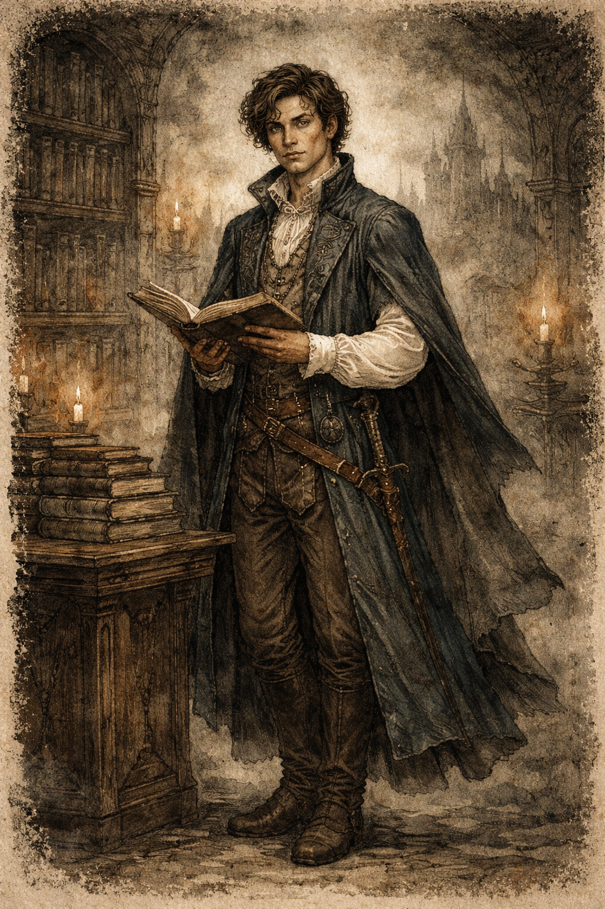
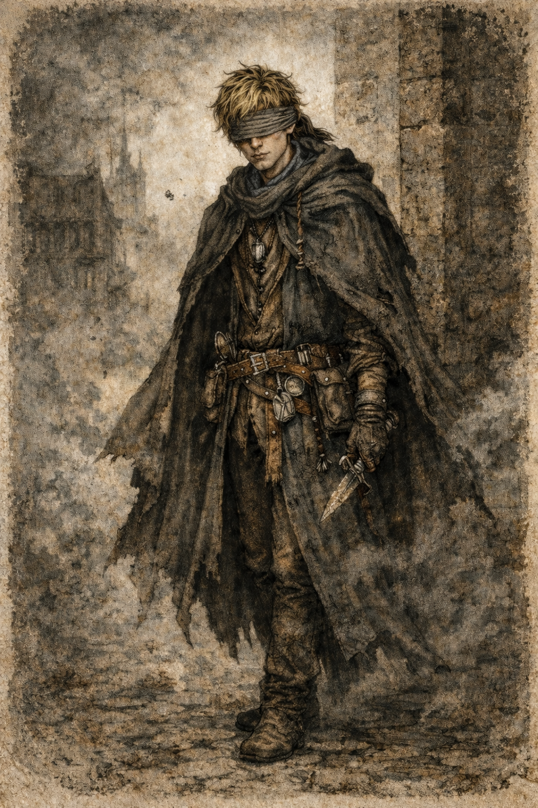
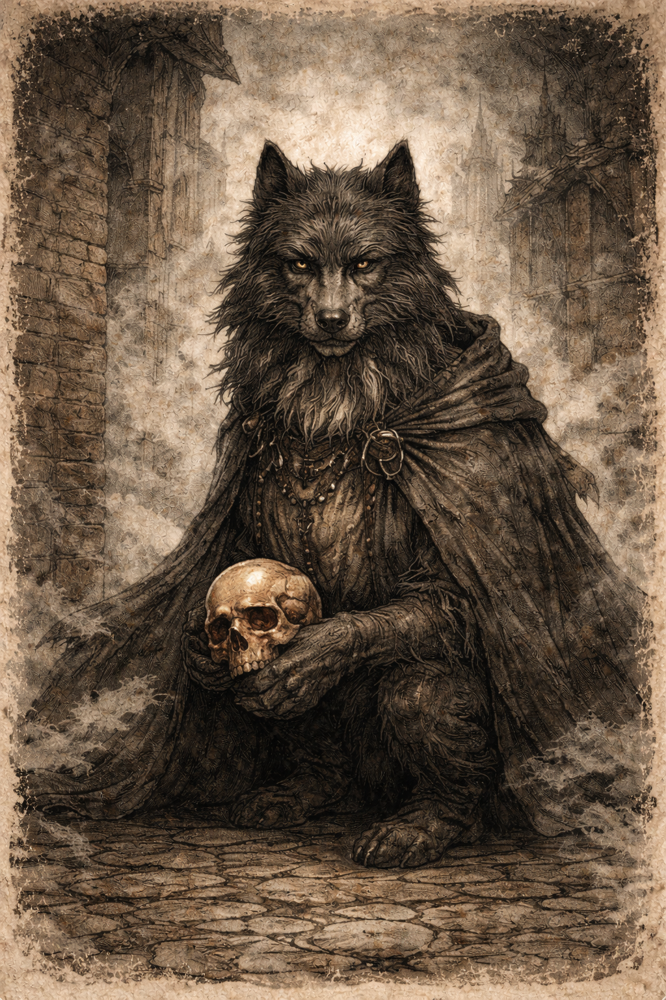
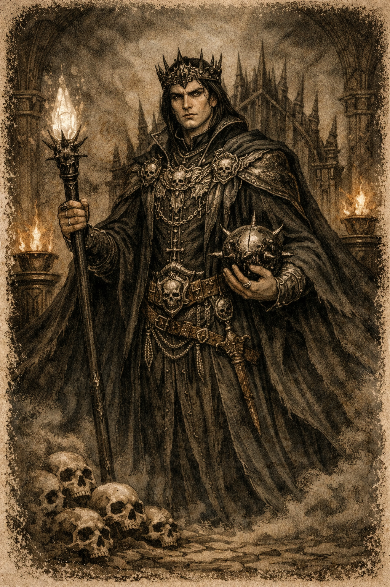

Personajes de la Era 1
Vin
Vin es la protagonista principal de la primera era. Su arco narrativo la lleva de ser una ladrona desconfiada que ha aprendido a sobrevivir en un mundo hostil a convertirse en una figura clave para la salvación del mundo. A lo largo de la historia descubre sus poderes como nacida de la bruma y aprende a utilizarlos gracias al entrenamiento de Kelsier y de su grupo.
Su evolución está marcada por la búsqueda de confianza en los demás y en sí misma. Vin representa el conflicto entre identidad y pertenencia, pasando de ser una superviviente solitaria a convertirse en una líder capaz de tomar decisiones que afectan al destino del mundo.

Kelsier
Kelsier actúa como mentor y catalizador de la revolución. Tras sobrevivir a los Pozos de Hathsin, su odio hacia el Imperio Final lo impulsa a organizar un plan imposible: derrocar al Lord Legislador.
A lo largo de la historia se convierte en una figura simbólica para los skaa. Más allá de sus habilidades como nacido de la bruma, Kelsier representa la esperanza de un pueblo oprimido. Su legado continúa incluso después de su muerte, transformándose en el mito del Superviviente.

Sazed
Sazed es un erudito terrisano dedicado a preservar conocimientos religiosos y culturales. Como guardián, memoriza múltiples religiones antiguas que fueron destruidas o prohibidas durante el Imperio Final.
Su arco narrativo es uno de los más profundos de la saga. Tras experimentar una crisis de fe, Sazed termina desempeñando un papel fundamental en el destino del mundo. Su historia explora temas como la religión, el conocimiento y el equilibrio entre fuerzas opuestas.

Elend Venture
Elend Venture comienza como un joven noble idealista interesado en la filosofía política. Aunque inicialmente se muestra distante del sistema del Imperio Final, su relación con Vin lo lleva a implicarse directamente en la revolución.
Con el tiempo evoluciona hasta convertirse en un gobernante pragmático que intenta construir un sistema político más justo. Su personaje representa el conflicto entre ideales teóricos y decisiones necesarias en momentos de crisis.

Spook
Spook, cuyo verdadero nombre es Lestibournes, comienza como el miembro más joven y menos experimentado del grupo de Kelsier. Durante gran parte de la historia parece tener un papel secundario, pero su desarrollo lo convierte en uno de los personajes más interesantes de la trilogía.
A través de sus experiencias y de su dominio del estaño, Spook aprende a superar sus inseguridades y acaba asumiendo un papel importante en la reconstrucción del mundo tras la caída del Imperio Final.

TenSoon
TenSoon es un kandra que inicialmente actúa como espía infiltrado dentro del grupo de Vin. Como miembro de una especie creada mediante hemalurgia, su existencia está marcada por reglas estrictas y por una identidad basada en el servicio.
Sin embargo, su relación con Vin lo lleva a cuestionar su papel y a desarrollar una mayor independencia. Su historia explora temas como la identidad, la libertad y la naturaleza de lo que significa ser humano.

El Lord Legislador
El Lord Legislador es el gobernante absoluto del Imperio Final y la figura central del sistema que domina el mundo durante mil años. Tras la Ascensión se convierte en un ser de poder casi divino y establece un régimen basado en el control de la sociedad, la religión y el conocimiento. En la narrativa oficial del Imperio es venerado como un dios viviente que salvó al mundo del desastre, y su autoridad se mantiene mediante una estricta jerarquía social que divide a la población entre nobles y skaa.
Con el desarrollo de la historia se revela que su figura es más compleja de lo que aparenta. Posee habilidades extraordinarias que combinan Alomancia y Feruquimia, lo que le permite mantener una longevidad casi ilimitada y un poder superior al de cualquier otro individuo. Su personaje representa el tema del poder absoluto y sus consecuencias, mostrando cómo un antiguo héroe terminó convirtiéndose en el símbolo de un sistema opresivo destinado a preservar el orden a cualquier precio.
